|
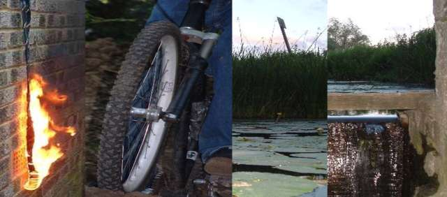 seb finished his exams so he came to visit and ride trails. about the first thing we did was use almost a whole can of deodorant to burn sebs school tie. he must suck it a lot or something cos it wouldn't burn properly until we soaked it in petrol. the next thing he did was get my can of matt black spay paint to get rid of all the on-one logos on his bike. he doesn't like on-one you see. 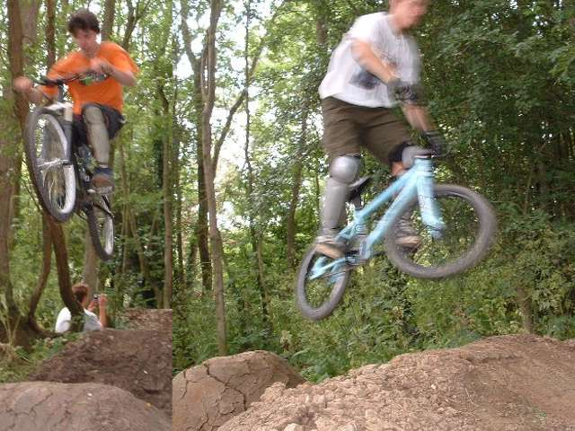 well that's all part of having seb come to stay. great amusement value. 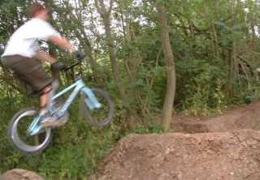 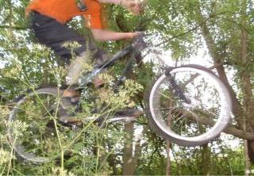 seb is like a little swamp boy. he goes around with bare feet a lot and then wears his shoes without socks so they stink. that means he is always washing his feet in the sink, and getting mud on the bath mat. 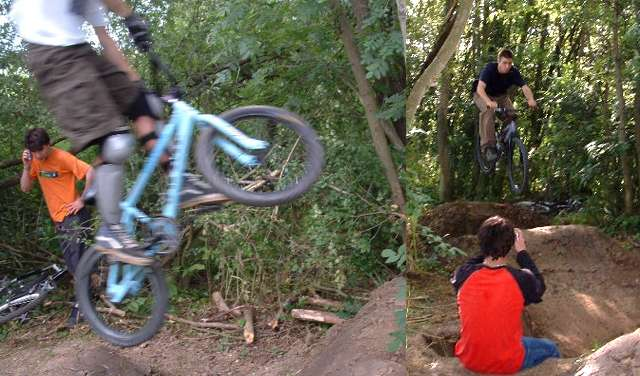 above - seb on the phone, probably to his mum or dad. we had quite a lot of fun just ringing sebs friends and telling them that they have weird names, which they do. its quite funny to ring people and order a chinese too, except i can't do it without laughing my head off. sebs texts his ungirlfriend to tell her that i love her. 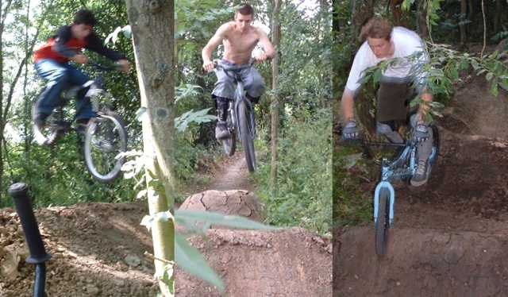 bike maintenance: i thought my bike was noisy, but it was pretty easy to hear seb coming. his saddle was attached with ducktape cos he lost the bits for his seat post, and his pedals were very loose so they clunked all the time. we tried to get tims seatpost out of his (snapped) gimp but it's well and truly stuck. in the end it turned out to be quite a good thing as i could hear when he was coming so i could time the camera better. 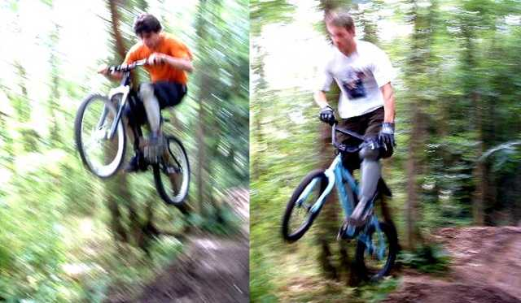 i guess i should say something about seb's riding style. he has such a relaxes style its almost lazy and he kicks out his back wheel a lot. he's good at kickouts. 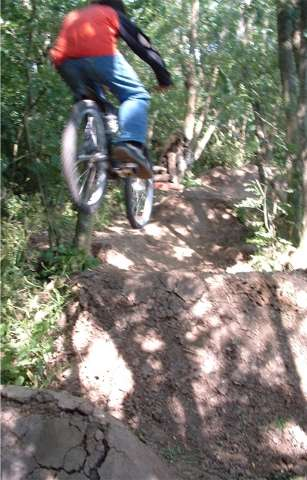 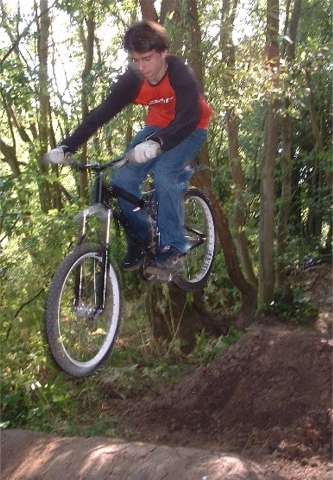 haha. in the evening we just sat about and messed about a bit and i discovered my camera could do this: 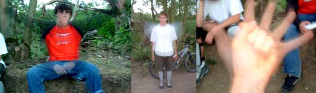 it's pretty cool i think. you can get two photos at the same time. that's my hand. 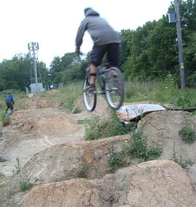 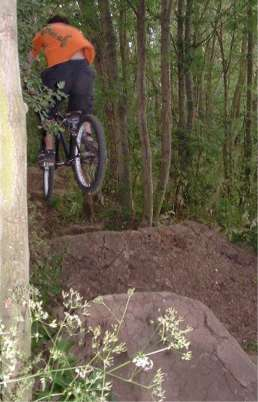 seb over the orange trails on the left and black mill on the right. orange is ok for tricks, but black mill rules. 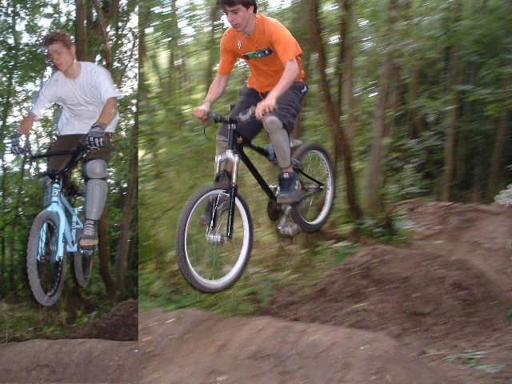 tim: yeah i know it looks like i am coming up short, im not. seb and his accidental no-footer, living legend. 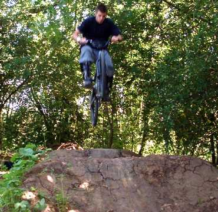 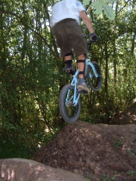 last day: we rode my line for a bit. no-one likes my line as the run up is hard (it has a berm!) and the bowls are too small. i think it's still fun. and we went to the orange trails and rode with the lucky red cap. i am sure it makes you ride better. bottom right - seb taking a photo of where the pedal cut up his leg. good one 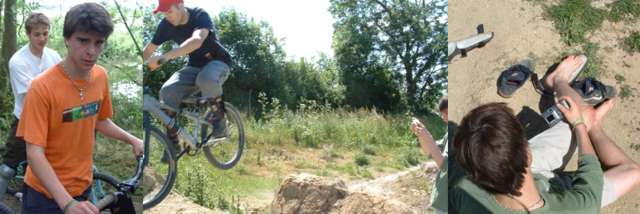 |